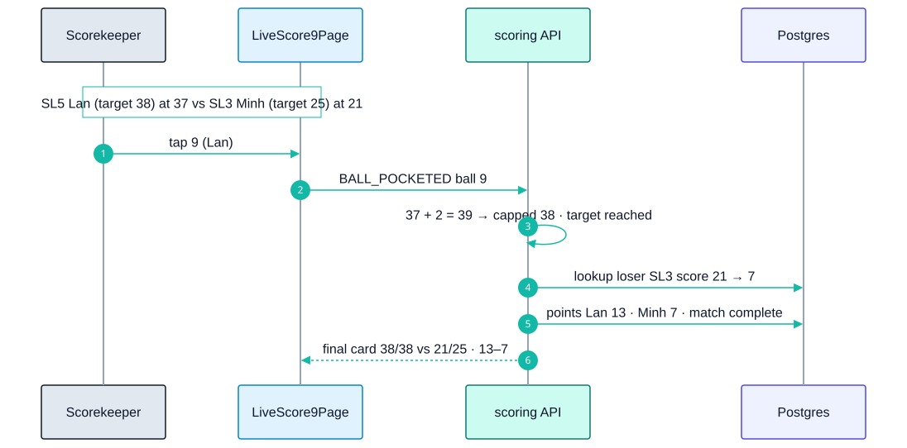
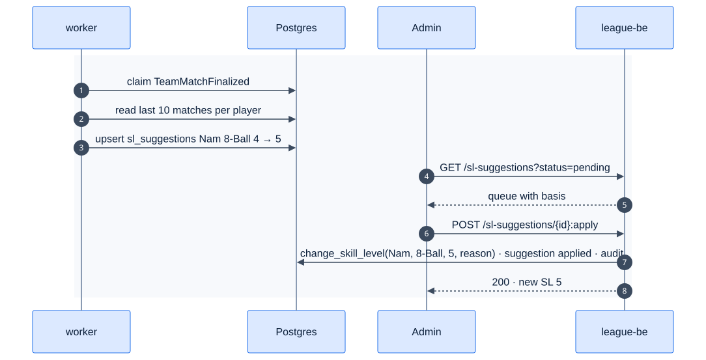

22 - 9-Ball & Handicap
Epic E09 · 2 features
| Goal | Run 9-Ball divisions with point-based scoring and the 20-point split, and keep every player's skill level honest with data-driven suggestions |
| Phase | 2 |
| Status | Target Not started. Phase 1 is 8-Ball only, with manual SL changes (E05-F18) |
| Actors | Scorekeeper, Captains, Admin |
| Related | 04 §6, §10 · 08 §4.2 · appendix rule tables |
22.1 Features by phase
22.1.1 Phase 1
Nothing. divisions.format is 8_ball only; SL is one number per player.
22.1.2 Phase 2
| # | Feature | Status |
|---|---|---|
| F32 | 9-Ball scoring + per-format SL | Target |
| F33 | Skill-level suggestions | Target |
22.2 Phase 2 deep dive
22.2.1 8-Ball vs 9-Ball at a glance
| 8-Ball (Phase 1) | 9-Ball (F32) | |
|---|---|---|
| SL range | 2–7 | 1–9 |
| Match goal | Race in games (race chart) | Target in points (14…75 by SL) |
| Rack | Win or lose the rack | Balls 1–8 = 1 point, 9 = 2 points, 10 per rack |
| Team points per match | 3/0 · 2/1 · 2/0 | 20-point split from the loser's SL and score |
| Max per night | 15 + 1 bonus | 100 + 10 bonus |
| Team SL cap | 23 | 23 (bylaw) |
| SL basis (F33) | Effective innings per won game, last 10 wins | Points per inning (PPI), last 10 matches |
22.2.2 Components

22.2.3 Data delta
| Object | Change |
|---|---|
divisions.format |
8_ball · 9_ball |
player_skill_levels |
+ format; current SL is per (player_id, format) |
individual_matches |
+ target_home, target_away, points_scored_home/away (9-Ball) |
nine_ball_targets (sl, target), nine_ball_points (loser_sl, min_score, max_score, loser_pts) |
Seeded reference tables, tested for contiguity |
racks |
+ balls jsonb, dead_balls int (9-Ball) |
sl_suggestions (id, player_id, format, current_sl, suggested_sl, basis jsonb, status, decided_by, decided_at) |
F33 |
22.3 F32 — 9-Ball scoring + per-format SL
22.3.1 Requirements
As a scorekeeper in a 9-Ball division, I tap each ball as it's pocketed. The app keeps both players' points against their SL targets and splits 20 team points correctly at the end.
| ID | Requirement |
|---|---|
| FR-32.1 | Divisions have format. A player has one current SL per format (8-Ball 2–7, 9-Ball 1–9); SL history is kept per format |
| FR-32.2 | Targets by SL: 1→14, 2→19, 3→25, 4→31, 5→38, 6→46, 7→55, 8→65, 9→75 |
| FR-32.3 | Live screen: a 9-ball rack grid (balls 1–9). Tapping a ball credits the active player: 1 point, or 2 for the 9 (R-080) |
| FR-32.4 | Dead ball (DEAD_BALL {ball}): balls 1–8 pocketed on a foul count for nobody. The 9 is never dead; on a foul it's re-spotted and nothing is recorded (R-081, R-082) |
| FR-32.5 | A rack closes when the 9 is credited. Unaccounted balls are offered as "mark as dead?" so that points A + points B + dead = 10 (R-085) |
| FR-32.6 | The match ends the moment a player reaches their target; the recorded score is capped at the target (R-083) |
| FR-32.7 | Team points: loserPts = lookup(loserSL, loserScore) from the 20-point table; winnerPts = 20 − loserPts. PA = 20 per match (R-091) |
| FR-32.8 | Accolades: 9OB (9 on a legal break) and BR (R-084); ball points still count |
| FR-32.9 | Innings, DS and time-outs work as in 8-Ball (F27) |
| FR-32.10 | The 23 SL cap and the put-up rules use the 9-Ball SL in 9-Ball divisions |
22.3.2 Logic
Ball event reducer

20-point split lookup
text
points9(loserSL, loserScore):
row = nine_ball_points where loser_sl = loserSL
and loserScore between min_score and max_score
return (20 - row.loser_pts, row.loser_pts)
example: loser SL3 scored 21 → band 20–21 → 13 / 722.3.3 Flow

22.3.4 UI
| Element | Detail |
|---|---|
| Ball grid | Nine round buttons (56 px) with standard ball colours and numbers. A pocketed ball shows the scorer's initial; a dead ball is struck through |
| Score bar | 31 / 38 with a progress bar per player and the points still needed |
| Rack close | When the 9 is tapped, a sheet lists unaccounted balls: "Mark 3 and 6 as dead?" |
| Breakdown (R-144) | Points/target per player, e.g. 38/38 – 21/25, and team points |
22.3.5 Edge cases
| ID | Situation | Expected |
|---|---|---|
| EC-32.1 | 9 pocketed on a foul | Not dead; re-spot; no points; the rack continues (08 §8 #4) |
| EC-32.2 | Player at 37/38 makes the 9 | Recorded 38, the match ends (08 §8 #5) |
| EC-32.3 | Loser scored 0 | 20/0 |
| EC-32.4 | Player has no 9-Ball SL yet | Put-up blocked with "No 9-Ball skill level"; admin sets one |
| EC-32.5 | Forfeit in 9-Ball | 20/0, no MP (F39b) |
22.3.6 Acceptance criteria
- AC-32.1 Given the 20-point table, then every SL row covers
0 … target − 1with no gaps or overlaps (unit test). - AC-32.2 Given a rack where A scores 6, B scores 2 and 2 balls are dead, then the rack is valid (6 + 2 + 2 = 10).
- AC-32.3 Given loser SL3 with 21 points, then team points are 13–7.
22.3.7 Open questions
- Time-outs per rack for 9-Ball (R-104 default).
- Is the team SL cap also 23 for 9-Ball?
22.4 F33 — Skill-level suggestions
| Phase | Status | Rules | Repo refs |
|---|---|---|---|
| 2 | Target | R-120–R-126 · 04 §10 | Phase 1: manual change via change_skill_level() (E05-F18) |
22.4.1 Requirements
As an admin, after each night the system tells me whose skill level looks wrong, why, and lets me apply the change in one tap with the same history and audit as a manual change.
| ID | Requirement |
|---|---|
| FR-33.1 | After each finalized night (outbox TeamMatchFinalized), the worker recomputes the suggested SL for every player who played |
| FR-33.2 | 8-Ball basis (R-121): over the last 10 won matches, avg(effective innings per game won), where effective innings = innings − DS |
| FR-33.3 | 9-Ball basis (R-122): over the last 10 matches, PPI = Σ points ÷ Σ (innings − DS) |
| FR-33.4 | Thresholds map the basis to an SL. They're stored in sl_thresholds (format, sl, min_value, max_value) and configurable; R-123 says the sources don't give them, so defaults are seeded and marked Assumption |
| FR-33.5 | A suggestion is created only when suggested ≠ current and the player has at least 5 qualifying matches (configurable). An existing pending suggestion for the same player and format is replaced |
| FR-33.6 | The admin queue shows the player, format, current → suggested, the basis (window, values) and a sparkline. Actions: Apply (calls change_skill_level with reason "Suggested: {basis}"), Dismiss (reason required), Snooze 2 weeks |
| FR-33.7 | Applied changes follow R-050/R-125: matches already started keep their snapshot; later put-ups use the new SL |
| FR-33.8 | No auto-apply in Phase 2 (R-123); every change needs an admin |
22.4.2 Logic

22.4.3 Flow

22.4.4 API & data
json
{
"id": "<suggestion-uuid>",
"playerId": "<player-uuid>",
"format": "8_ball",
"currentSl": 4,
"suggestedSl": 5,
"basis": { "window": 10, "metric": "effective_innings_per_win", "value": 3.1 },
"status": "pending"
}22.4.5 Edge cases
| ID | Situation | Expected |
|---|---|---|
| EC-33.1 | New player with 2 matches | No suggestion yet |
| EC-33.2 | Admin changes the SL manually while a suggestion is pending | The suggestion is marked superseded |
| EC-33.3 | Matches finished by manual entry (no innings data) | Excluded from the basis |
| EC-33.4 | Suggestion swings back and forth every week | Snooze; consider a hysteresis band in the thresholds |
22.4.6 Acceptance criteria
- AC-33.1 Given a fixture of 10 wins with known innings and DS, then the computed basis matches the expected value to 2 decimals.
- AC-33.2 Given Apply, then
player_skill_levelshas a new row,audit_logrecords it, and the suggestion isapplied.
22.4.7 Open questions
- The real threshold values (R-123) must come from the league.